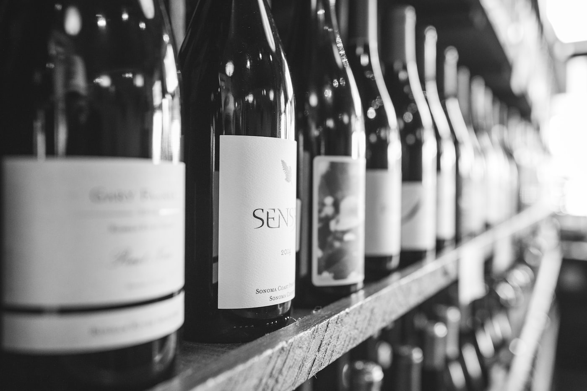

Магазин

| Тип вина | Красное вино | Белое вино | Розовое вино |
|---|---|---|---|
| Сухое | "Astrale" Rosso, Италия | Brancott Estate, Marlborough Sauvignon Blanc, Новая Зеландия | Rignana, Sangiovese Rosato, Toscana IGT, Италия |
| П/с | Cielo e Terra, "Primasole" Primitivo, Puglia IGT, Италия | "Toucas", Vinho Verde DOC, Португалия | Mare Alta vinho verde Rose, Португалия |
| П/сл | Vizconde de Begijar, Испания | Santa Luz Alba Moscato, Чили | Sanprimo Rosato Puglia, Италия |
| Сладкое | Nectar Pedro Ximenez, Испания | Concha y Toro, "Frontera" Moscato, Чили | "Tussock Jumper" Moscato Rose, Испания |